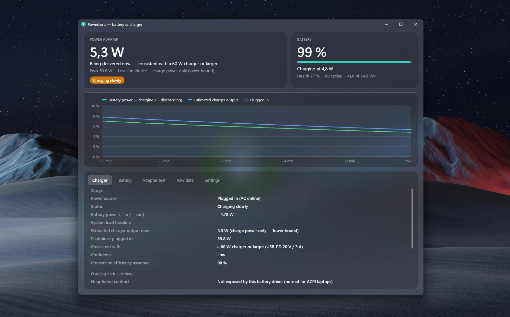

See what your USB-C charger really delivers.
PowerLens shows your laptop battery's health, cycle count and live power, and measures how many watts your charger is actually supplying. Think coconutBattery, for Windows.

Everything about your power, in one place
PowerLens reads the same battery interfaces Windows uses for its own battery report. It works without admin rights and without installing anything.
Charger wattage
Shows the negotiated USB-C contract when your laptop exposes it. Otherwise it measures the power coming in and matches it to standard charger ratings.
Battery health
Design vs. full-charge capacity, cycle count, voltage, current, temperature, chemistry, manufacturer and manufacture date.
Live power chart
Battery power and charger output over the last ten minutes, with plugged-in periods highlighted.
Adapter test
A guided one-minute measurement: unplug, plug back in, and get the most accurate charger estimate your hardware allows.
Tray icon
Optional live watts in the notification area, colour-coded for charging, discharging or a charger that's too weak.
Command line
powerlens-cli prints a full report, JSON with --json, or a live line every two seconds with --watch.
How PowerLens measures your charger
Windows has no public way for apps to read the wattage your laptop agreed with the charger, so PowerLens works it out from what Windows does expose.
Ask the hardware first
Some laptops publish the charger contract through the battery driver or the manufacturer's tools. When they do, PowerLens shows it directly, e.g. 20 V × 3.25 A = 65 W.
Measure the power flow
On battery, the discharge rate is your system's load. Plugged in, the charger supplies that load plus the battery's charging power plus conversion losses.
Match a charger rating
The measured power is matched to the smallest standard USB-C charger that could deliver it, such as 30, 45, 65 or 100 W.
Get PowerLens
A single portable app. Unzip it anywhere and run it; uninstalling is just deleting the folder.
Download
- Download the zip for your PC.
- Right-click it → Extract All.
- Run
PowerLens.exe.
Not sure? Most PCs are x64. Snapdragon laptops are ARM64. All releases and checksums are on the releases page.
"Windows protected your PC"?
PowerLens isn't code-signed yet, so Microsoft Defender SmartScreen may warn the first time you open it. Click More info → Run anyway. The source code and the build that produced each download are public on GitHub.
Build it yourself
With the .NET 10 SDK installed: git clone https://github.com/kdoul/PowerLens, then dotnet run --project src/PowerLens.App.
Questions
Does it need admin rights?
No. Battery data comes from the standard battery driver interface and WMI, which any user can read.
Why is the charger wattage sometimes an estimate?
Your laptop negotiates power with the charger in its own firmware, and Windows uses the result only internally. When the driver or the manufacturer's software exposes the contract, PowerLens shows it. Otherwise it measures the power actually flowing in.
How does Windows decide a charger is "slow"?
Windows doesn't measure it. The laptop's controller compares the agreed charger power with what the machine needs and flags the connection as slow or not charging; Windows only shows the notification. That flag isn't available to apps, so PowerLens gives its own verdict: Charging slowly under 20 W delivered, or Charger too weak when the battery drains while plugged in.
Which Windows versions are supported?
Windows 10 and 11, on x64 and ARM64. The acrylic window style needs Windows 11 22H2 or later; older versions use solid colours.
Does it work on desktop PCs?
It runs, but without a battery there's nothing to measure. PowerLens is made for laptops and tablets.
Does it send any data anywhere?
No. PowerLens makes no network connections. Everything stays on your PC.